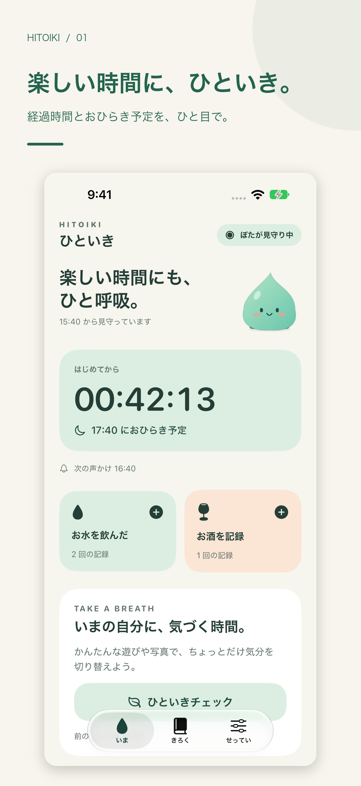

帰る時間を、忘れない。
経過時間とおひらき予定をひと目で。30・60・90分のローカル通知で、小さな休憩のきっかけを。
公開前の設定が必要です。運営者名・問い合わせメール・公開URLを publisher.json に設定して再生成してください。
A LITTLE PAUSE
楽しい時間に、ひといき。飲み会の経過時間とおひらき予定を確かめながら、お水・お酒・今の気持ちを記録。Apple Watchからも、手元でそっと振り返れます。
iPhone / Apple Watch
アカウント登録なし

経過時間とおひらき予定をひと目で。30・60・90分のローカル通知で、小さな休憩のきっかけを。
お水やお酒を記録し、計算・しずく探し・写真で少しだけ立ち止まれます。
Apple Watchから記録。あとでメモや写真を見返し、CSVにも書き出せます。
よくある質問はサポートページをご覧ください。
連絡先は公開前に設定します。